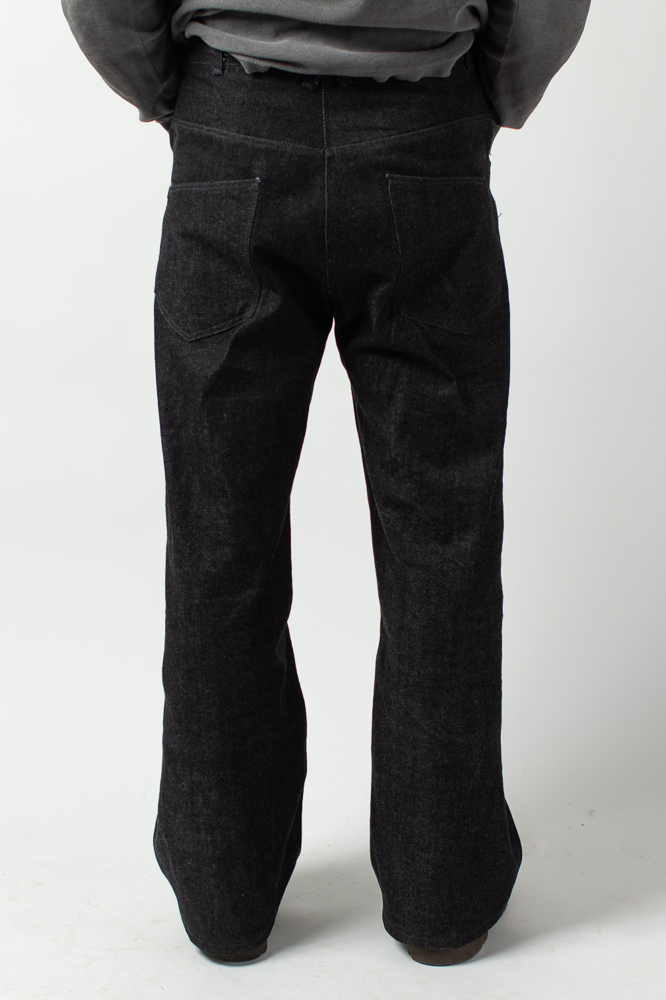
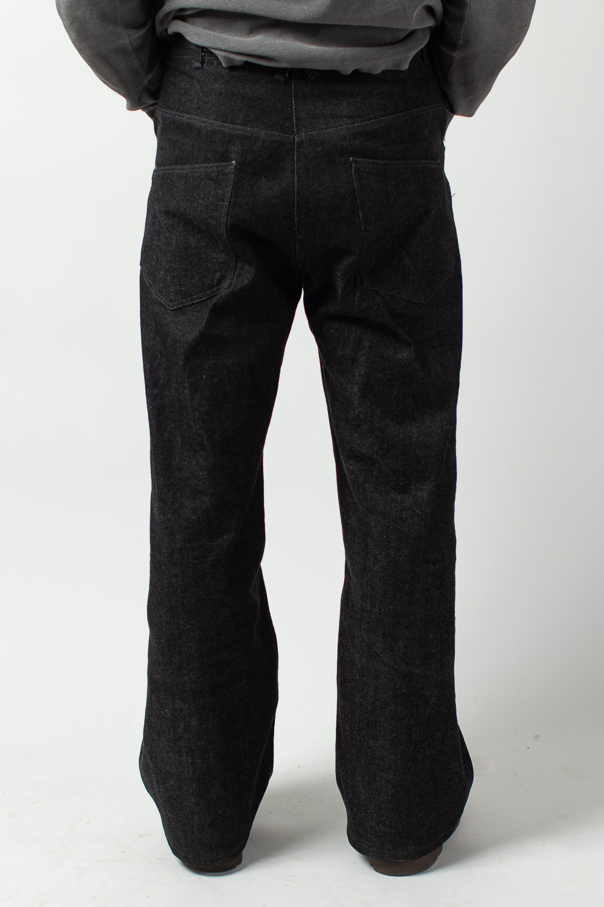
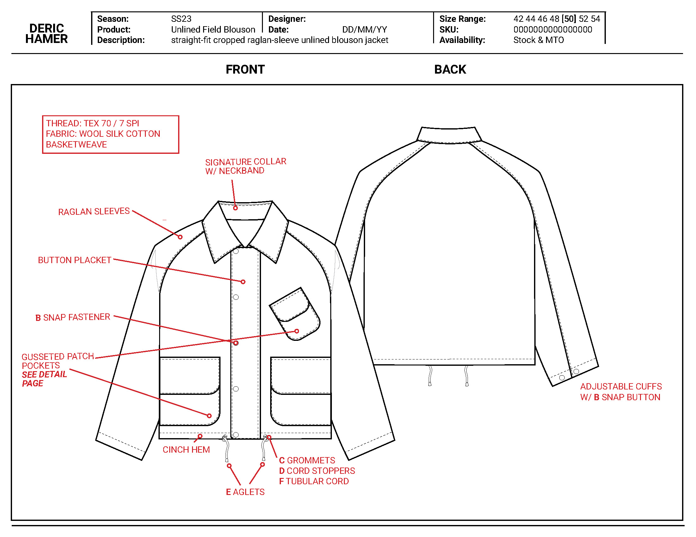
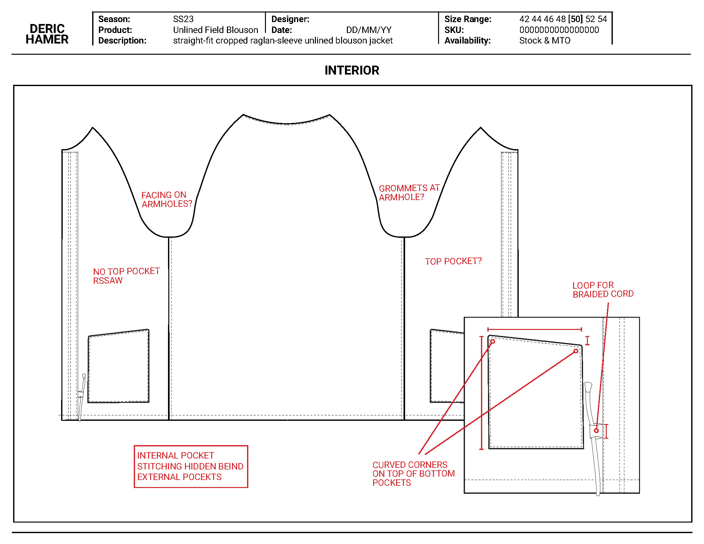
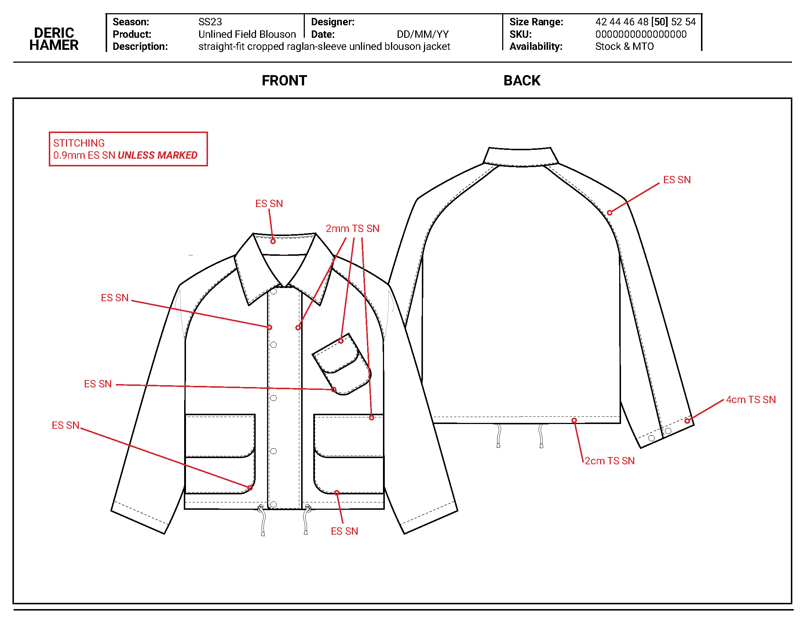
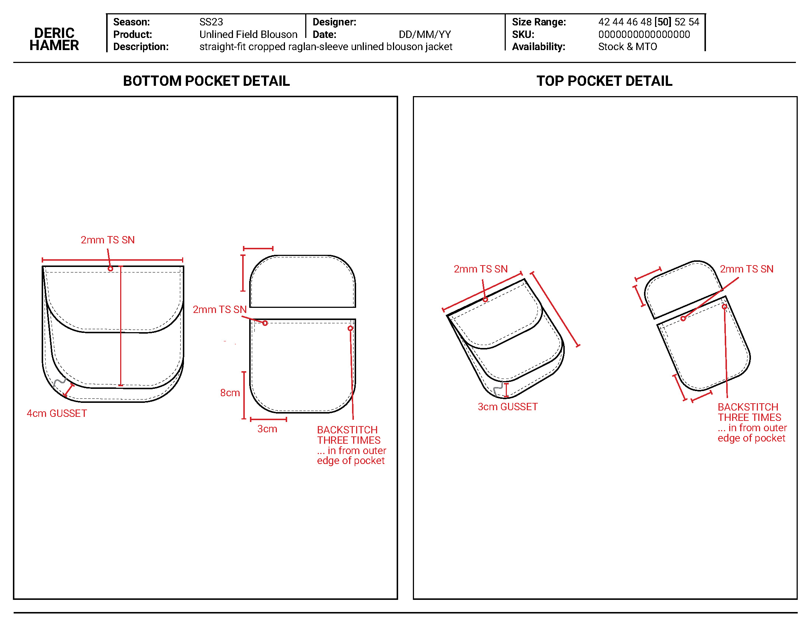
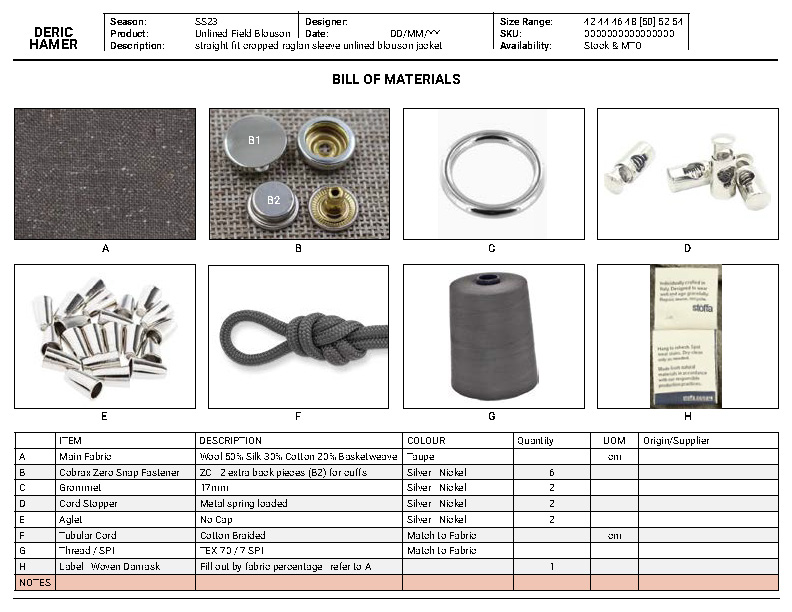

Denim
Designed, Patterned and Sewn. 4-pocket sans coin denim style with slanted back pocket made in black warp and white weft.
 

J. Press Holiday Gift Guide 2024
Set and Product Styling
1.5 Breast Blouson Jacket Techpack
    
J. Press Fall Winter 2024 Lookbook
Styling and Production Assistance
J. Press Pennant Label Fall/Winter 2024 Campaign
Styling and set assistance.
Atelier Sylva Spring/Summer 2023
fka Nineteen Bags
Design/Production/Consultation
Digital sketch

Ras Harba Logo || 2022
Design for shipping company. Rendered in Kufic style calligraphy.

Hand drawn print featuring balisongs. Rendered with a human feel to evoke the hand-painted designs of 1940s aloha shirts.


Rolling Stones No Filter Tour Merch || 2022
Design/Production for Rolling Stones No Filter Tour medical team .Direct-to-garment print, with white base layer.

Inspired by my time in Sudan. Reversible shirt is inspired by traditional جلابية jilabīyah, which are reversible and have pockets on each side. Tracksuits made from Sudanese fabric, used to make traditional garments called على الله Alallah, a garment meant for mobility and comfort in Sudan as tracksuits are in the United States.


Original photo silk-screened print natural linen woven.


Styling editorial reflecting on the then current trend of wearing classic workwear and hunting items and prints like safety vests, blaze orange, and Realtree camo. Inspired by the work of Moroccan photographer Hassan Hajjaj and rethought in the context of small town Minnesota.